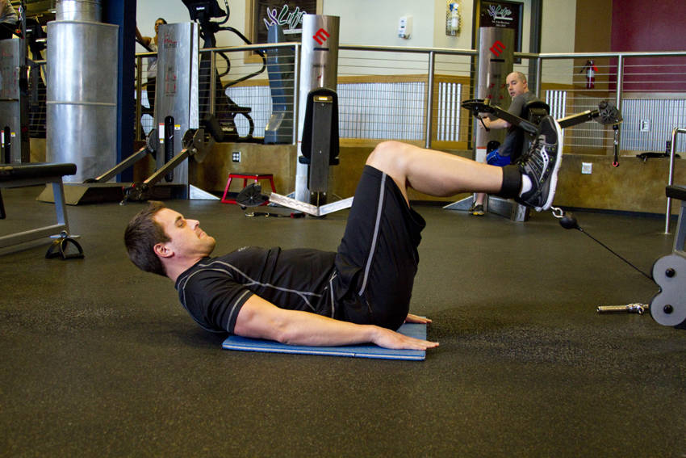

- Connect an ankle strap attachment to a low pulley cable and position a mat on the floor in front of it.
- Sit down with your feet toward the pulley and attach the cable to your ankles.
- Lie down, elevate your legs and bend your knees at a 90-degree angle. Your legs and the cable should be aligned. If not, adjust the pulley up or down until they are.
- With your hands behind your head, bring your knees inward to your torso and elevate your hips off the floor.
- Pause for a moment and in a slow and controlled manner drop your hips and bring your legs back to the starting 90-degree angle. You should still have tension on your abs in the resting position.
- Repeat the same movement to failure.
This exercise appears in Programmd training programs. Take the quiz to find one for your gym.
Find your program